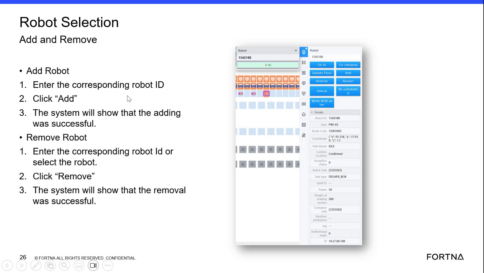

| Procedure ID | proc_remove_a_robot_using_the_robot_selection_screen_v1 |
|---|---|
| Title | Remove a Robot Using the Robot Selection Screen |
| Procedure Type | operation |
| Primary Role | operator |
| Support Safe | Yes |
| Validation Status | needs_sme_review |
| Merge Status | source_finalized |
Use the Robot Selection Add and Remove screen to remove a robot by entering the corresponding robot ID or selecting the robot, then confirm the system reports that removal was successful.
Use when performing a robot removal action from the Robot Selection Add and Remove interface.
Responsible role: operator
Instruction:
Open or locate the "Robot Selection Add and Remove" screen.
Expected result:
The Robot Selection Add and Remove interface is visible and available for use.
Screens / Images:

Stop or Escalate If:
Responsible role: operator
Instruction:
In the Remove Robot section, enter the corresponding robot ID or select the robot.
Expected result:
The intended robot is identified in the Remove Robot section.
Screens / Images:
Stop or Escalate If:
Responsible role: operator
Instruction:
Click "Remove."
Expected result:
The system processes the remove request.
Screens / Images:
Stop or Escalate If:
Responsible role: operator
Instruction:
Verify that the system shows that the removal was successful.
Expected result:
The system shows that the removal was successful.
Screens / Images:
Stop or Escalate If: